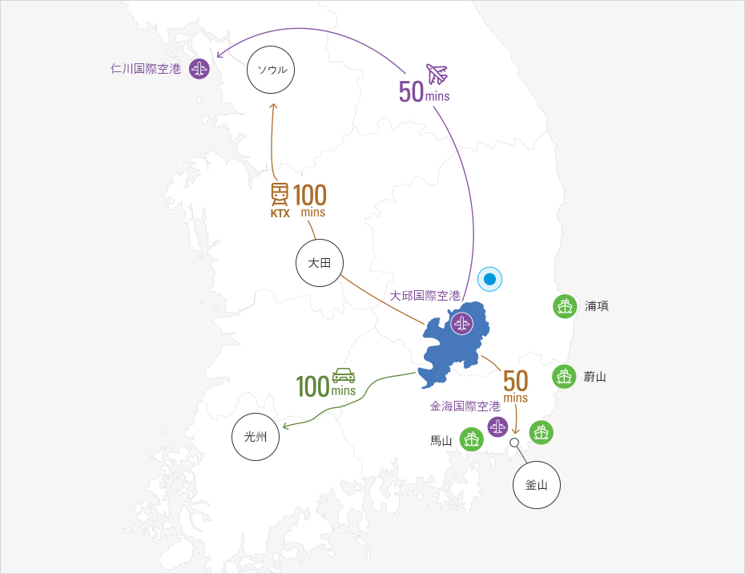
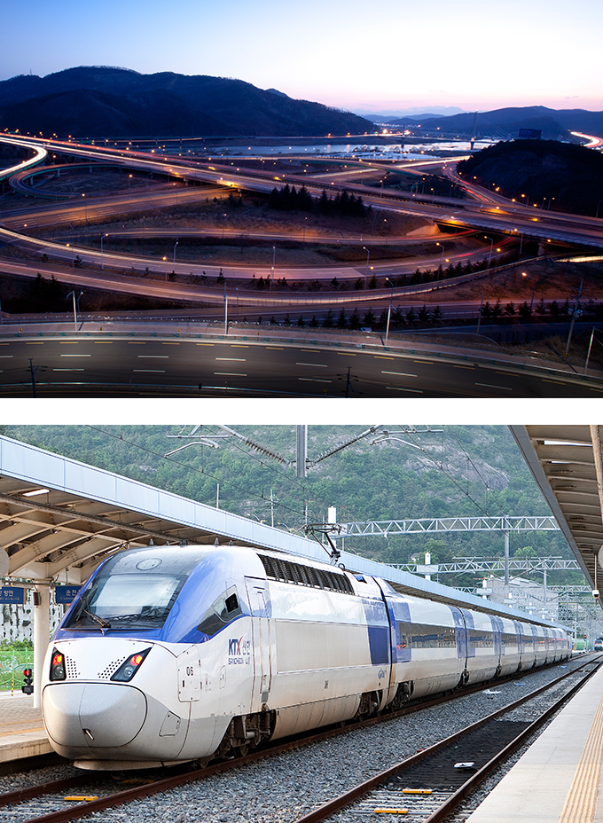

全国を繋ぐ交通の要所
- Home
- 投資メリット
- 投資メリット
- 全国を繋ぐ交通の要所
全国を繋ぐ交通の要所



-
航空大邱国際空港から国内及び国際路線を運航(www.airport.co.kr/mbs/daegu/)
-
港湾1時間圏内に5つの港が位置 (浦項港、蔚山港、馬山港、釜山国際港、釜山新港)
-
陸路
- 全国を繋ぐ7つの高速道路が通過 (京釜、邱馬、中央、88、中部内陸、大邱 -浦項、大邱－釜山)
- KTX高速鉄道: 大邱-ソウル間99分
- 2つの鉄道路線: 京釜線、大邱線
- 地下鉄2路線
1号線(大谷～安心)、2号線(汶陽～沙月)、地下鉄3号線(漆谷～凡勿)の建設及び2号線の 慶山までの延長を推進中
大邱国際空港国際航空路線
| 路線名 | 運航(往復)便数 |
|---|---|
| 大邱↔ バンコク | 3便/週 |
| 大邱 ↔ 上海 | 9便/週 |
| 大邱 ↔ 瀋陽 | 2便/週 |
| 大邱 ↔ 北京 | 9便/週 |
| 大邱 ↔ 青島 | 2便/週 |
| 大邱 ↔ 香港 | 2便/週 |
